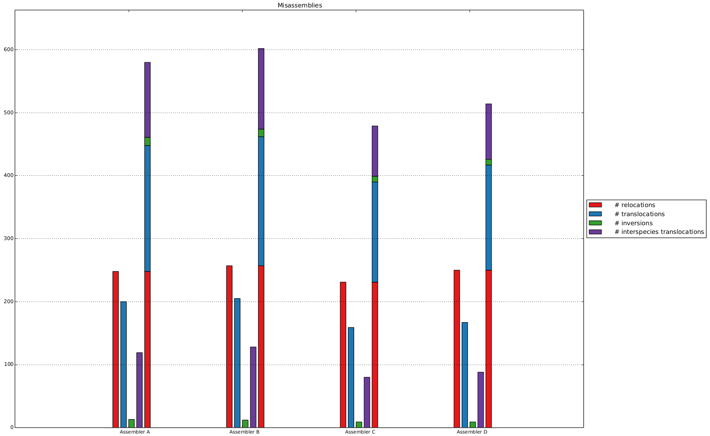
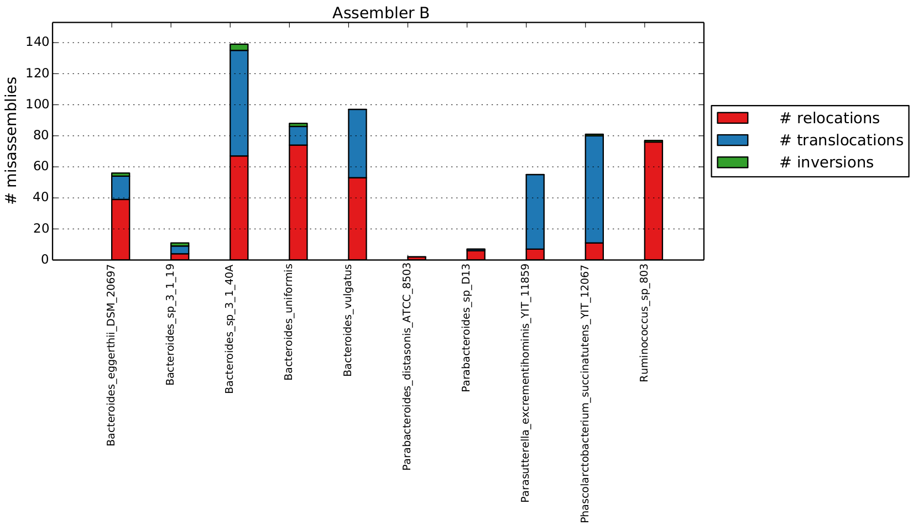
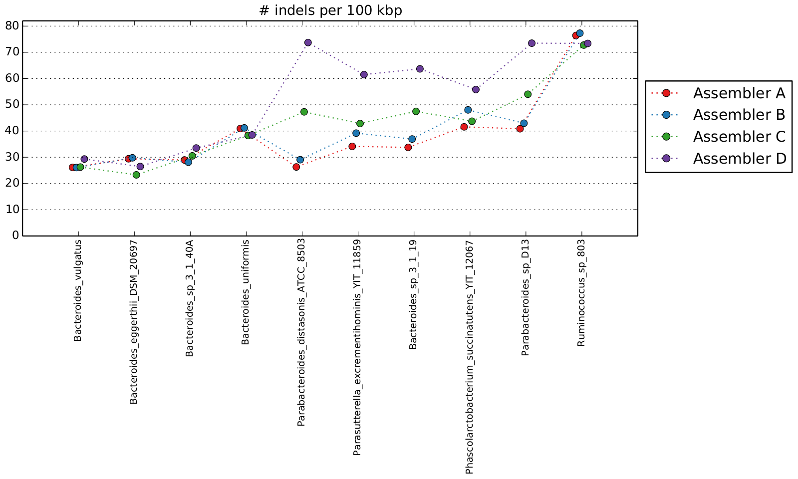

QUAST 3.0 new plots and reports example
Summary plots

{kind=link}
Misassemblies plot: all assemblies vs 1 reference
{kind=link}
Misassemblies plot: all references vs 1 assembly
{kind=link}
Summary plot for one metric (all references vs all assemblies)
MetaQUAST summary report
Loading...
|
Contigs are ordered from largest (contig #1) to smallest. Contigs are broken into nonoverlapping 100 bp windows. Plot shows numbers of windows for each GC percentage. |
||
[{"minContig":500,"report":[["Statistics without reference",[{"values":[33211,31203,44803,47217],"quality":"Less is better","isMain":true,"metricName":"# contigs"},{"values":[33211,31203,44803,47217],"quality":"Less is better","isMain":false,"metricName":"# contigs (>= 0 bp)"},{"values":[16018,15622,19759,21510],"quality":"Less is better","isMain":false,"metricName":"# contigs (>= 1000 bp)"},{"values":[296494,305144,189253,240630],"quality":"More is better","isMain":true,"metricName":"Largest contig"},{"values":[79617293,80310023,89443089,100790411],"quality":"More is better","isMain":true,"metricName":"Total length"},{"values":[79617293,80310023,89443089,100790411],"quality":"More is better","isMain":false,"metricName":"Total length (>= 0 bp)"},{"values":[67343710,69211571,72123066,83317379],"quality":"More is better","isMain":false,"metricName":"Total length (>= 1000 bp)"},{"values":[5386,6102,3593,4209],"quality":"More is better","isMain":true,"metricName":"N50"},{"values":[1518,1699,1242,1391],"quality":"More is better","isMain":false,"metricName":"N75"},{"values":[2015,1761,3955,3959],"quality":"Less is better","isMain":false,"metricName":"L50"},{"values":[9779,8662,15238,14936],"quality":"Less is better","isMain":false,"metricName":"L75"},{"values":["43.75","43.75","43.83","43.82"],"quality":"Equal","isMain":false,"metricName":"GC (%)"}]],["Misassemblies",[{"values":[580,602,479,514],"quality":"Less is better","isMain":true,"metricName":"# misassemblies"},{"values":[248,257,231,250],"quality":"Less is better","isMain":false,"metricName":" # relocations"},{"values":[200,205,159,167],"quality":"Less is better","isMain":false,"metricName":" # translocations"},{"values":[13,12,9,9],"quality":"Less is better","isMain":false,"metricName":" # inversions"},{"values":[119,128,80,88],"quality":"Less is better","isMain":false,"metricName":" # interspecies translocations"},{"values":[417,422,403,481],"quality":"Less is better","isMain":false,"metricName":"# possibly misassembled contigs"},{"values":[378,372,341,346],"quality":"Less is better","isMain":false,"metricName":"# misassembled contigs"},{"values":[9335387,9802674,6760537,8110843],"quality":"Less is better","isMain":true,"metricName":"Misassembled contigs length"},{"values":[253,329,234,735],"quality":"Less is better","isMain":false,"metricName":"# local misassemblies"}]],["Unaligned",[{"values":[29508,27753,40348,43381],"quality":"Less is better","isMain":false,"metricName":"# fully unaligned contigs"},{"values":[58689781,58820632,68865569,79220535],"quality":"Less is better","isMain":false,"metricName":"Fully unaligned length"},{"values":[988,947,1079,1084],"quality":"Less is better","isMain":false,"metricName":"# partially unaligned contigs"},{"values":[66,68,47,68],"quality":"Less is better","isMain":false,"metricName":" # with misassembly"},{"values":[242,239,239,286],"quality":"Less is better","isMain":false,"metricName":" # both parts are significant"},{"values":[2963316,3443403,2169429,2728184],"quality":"Less is better","isMain":false,"metricName":"Partially unaligned length"}]],["Mismatches",[{"values":[174574,172836,193373,190287],"quality":"Less is better","isMain":false,"metricName":"# mismatches"},{"values":[6671,6873,7323,8320],"quality":"Less is better","isMain":false,"metricName":"# indels"},{"values":[19573,20546,25674,31596],"quality":"Less is better","isMain":false,"metricName":"Indels length"},{"values":["976.19","969.36","1001.29","1013.50"],"quality":"Less is better","isMain":true,"metricName":"# mismatches per 100 kbp"},{"values":["37.30","38.55","37.92","44.31"],"quality":"Less is better","isMain":true,"metricName":"# indels per 100 kbp"},{"values":[5821,5953,6154,6819],"quality":"Less is better","isMain":false,"metricName":" # short indels"},{"values":[850,920,1169,1501],"quality":"Less is better","isMain":false,"metricName":" # long indels"},{"values":[5147,190274,0,1896189],"quality":"Less is better","isMain":false,"metricName":"# N's"},{"values":["6.46","236.92","0.00","1881.32"],"quality":"Less is better","isMain":true,"metricName":"# N's per 100 kbp"}]],["Genome statistics",[{"values":["42.896","42.795","46.414","45.331"],"quality":"More is better","isMain":true,"metricName":"Genome fraction (%)"},{"values":["1.067","1.072","1.053","1.068"],"quality":"Less is better","isMain":true,"metricName":"Duplication ratio"},{"values":[117456,152238,104682,116057],"quality":"More is better","isMain":false,"metricName":"Largest alignment"},{"values":[28692,34478,18430,24194],"quality":"More is better","isMain":false,"metricName":"NG50"},{"values":[11541,13614,8377,11613],"quality":"More is better","isMain":false,"metricName":"NG75"},{"values":[369,312,568,442],"quality":"Less is better","isMain":false,"metricName":"LG50"},{"values":[951,807,1442,1089],"quality":"Less is better","isMain":false,"metricName":"LG75"}]],["Predicted genes",[]],["Reference statistics",[{"values":[42294386,42294386,42294386,42294386],"quality":"Equal","isMain":false,"metricName":"Reference length"},{"values":["44.74","44.74","44.74","44.74"],"quality":"Equal","isMain":false,"metricName":"Reference GC (%)"}]]],"referenceName":"combined_reference","date":"29 June 2015, Monday, 16:51:10","order":[0,1,2,3],"assembliesNames":["Assembler A","Assembler B","Assembler C","Assembler D"]},{"minContig":500,"report":[["Statistics without reference",[{"values":[491,484,532,402],"quality":"Less is better","isMain":true,"metricName":"# contigs"},{"values":[491,484,532,402],"quality":"Less is better","isMain":false,"metricName":"# contigs (>= 0 bp)"},{"values":[377,374,438,328],"quality":"Less is better","isMain":false,"metricName":"# contigs (>= 1000 bp)"},{"values":[107196,107196,189253,189253],"quality":"More is better","isMain":true,"metricName":"Largest contig"},{"values":[4100009,4277162,4182007,4162840],"quality":"More is better","isMain":true,"metricName":"Total length"},{"values":[4100009,4277162,4182007,4162840],"quality":"More is better","isMain":false,"metricName":"Total length (>= 0 bp)"},{"values":[4018555,4197465,4113643,4108986],"quality":"More is better","isMain":false,"metricName":"Total length (>= 1000 bp)"},{"values":[24727,27434,17920,28108],"quality":"More is better","isMain":true,"metricName":"N50"},{"values":[10096,10426,8455,12110],"quality":"More is better","isMain":false,"metricName":"N75"},{"values":[48,44,65,42],"quality":"Less is better","isMain":false,"metricName":"L50"},{"values":[111,106,151,97],"quality":"Less is better","isMain":false,"metricName":"L75"},{"values":["42.54","42.60","42.49","42.51"],"quality":"Equal","isMain":false,"metricName":"GC (%)"}]],["Misassemblies",[{"values":[130,139,90,100],"quality":"Less is better","isMain":true,"metricName":"# misassemblies"},{"values":[62,67,47,55],"quality":"Less is better","isMain":false,"metricName":" # relocations"},{"values":[64,68,38,40],"quality":"Less is better","isMain":false,"metricName":" # translocations"},{"values":[4,4,5,5],"quality":"Less is better","isMain":false,"metricName":" # inversions"},{"values":[69,73,72,73],"quality":"Less is better","isMain":false,"metricName":"# possibly misassembled contigs"},{"values":[88,88,68,68],"quality":"Less is better","isMain":false,"metricName":"# misassembled contigs"},{"values":[1694719,1886247,925385,1278870],"quality":"Less is better","isMain":true,"metricName":"Misassembled contigs length"},{"values":[25,32,27,45],"quality":"Less is better","isMain":false,"metricName":"# local misassemblies"}]],["Unaligned",[{"values":[0,0,0,0],"quality":"Less is better","isMain":false,"metricName":"# fully unaligned contigs"},{"values":[0,0,0,0],"quality":"Less is better","isMain":false,"metricName":"Fully unaligned length"},{"values":[197,201,156,142],"quality":"Less is better","isMain":false,"metricName":"# partially unaligned contigs"},{"values":[7,8,4,3],"quality":"Less is better","isMain":false,"metricName":" # with misassembly"},{"values":[34,38,41,35],"quality":"Less is better","isMain":false,"metricName":" # both parts are significant"},{"values":[701519,744175,642133,699426],"quality":"Less is better","isMain":false,"metricName":"Partially unaligned length"}]],["Mismatches",[{"values":[21019,20479,23097,21612],"quality":"Less is better","isMain":false,"metricName":"# mismatches"},{"values":[907,908,1029,1080],"quality":"Less is better","isMain":false,"metricName":"# indels"},{"values":[2630,2711,3198,4659],"quality":"Less is better","isMain":false,"metricName":"Indels length"},{"values":["671.25","634.29","685.48","670.78"],"quality":"Less is better","isMain":true,"metricName":"# mismatches per 100 kbp"},{"values":["28.97","28.12","30.54","33.52"],"quality":"Less is better","isMain":true,"metricName":"# indels per 100 kbp"},{"values":[805,803,921,924],"quality":"Less is better","isMain":false,"metricName":" # short indels"},{"values":[102,105,108,156],"quality":"Less is better","isMain":false,"metricName":" # long indels"},{"values":[54,2890,0,6525],"quality":"Less is better","isMain":false,"metricName":"# N's"},{"values":["1.32","67.57","0.00","156.74"],"quality":"Less is better","isMain":true,"metricName":"# N's per 100 kbp"}]],["Genome statistics",[{"values":["57.658","59.433","61.275","58.572"],"quality":"More is better","isMain":true,"metricName":"Genome fraction (%)"},{"values":["1.072","1.081","1.050","1.075"],"quality":"Less is better","isMain":true,"metricName":"Duplication ratio"},{"values":[93093,93093,53909,58803],"quality":"More is better","isMain":false,"metricName":"Largest alignment"},{"values":[14965,17692,11254,17092],"quality":"More is better","isMain":false,"metricName":"NG50"},{"values":[null,1459,890,826],"quality":"More is better","isMain":false,"metricName":"NG75"},{"values":[13054,13107,9706,12559],"quality":"More is better","isMain":false,"metricName":"NA50"},{"values":[1168,880,2109,1345],"quality":"More is better","isMain":false,"metricName":"NA75"},{"values":[4977,6818,4970,5417],"quality":"More is better","isMain":true,"metricName":"NGA50"},{"values":[85,73,111,72],"quality":"Less is better","isMain":false,"metricName":"LG50"},{"values":[null,318,455,351],"quality":"Less is better","isMain":false,"metricName":"LG75"},{"values":[83,83,113,84],"quality":"Less is better","isMain":false,"metricName":"LA50"},{"values":[293,322,325,292],"quality":"Less is better","isMain":false,"metricName":"LA75"},{"values":[165,148,206,164],"quality":"Less is better","isMain":false,"metricName":"LGA50"}]],["Predicted genes",[]],["Reference statistics",[{"values":[5505782,5505782,5505782,5505782],"quality":"Equal","isMain":false,"metricName":"Reference length"},{"values":["42.58","42.58","42.58","42.58"],"quality":"Equal","isMain":false,"metricName":"Reference GC (%)"}]]],"referenceName":"Bacteroides_sp_3_1_40A","date":"29 June 2015, Monday, 16:52:03","order":[0,1,2,3],"assembliesNames":["Assembler A","Assembler B","Assembler C","Assembler D"]},{"minContig":500,"report":[["Statistics without reference",[{"values":[441,432,785,661],"quality":"Less is better","isMain":true,"metricName":"# contigs"},{"values":[441,432,785,661],"quality":"Less is better","isMain":false,"metricName":"# contigs (>= 0 bp)"},{"values":[83,85,120,135],"quality":"Less is better","isMain":false,"metricName":"# contigs (>= 1000 bp)"},{"values":[123821,123821,71835,71835],"quality":"More is better","isMain":true,"metricName":"Largest contig"},{"values":[762059,760573,833319,778628],"quality":"More is better","isMain":true,"metricName":"Total length"},{"values":[762059,760573,833319,778628],"quality":"More is better","isMain":false,"metricName":"Total length (>= 0 bp)"},{"values":[517745,523557,390260,427666],"quality":"More is better","isMain":false,"metricName":"Total length (>= 1000 bp)"},{"values":[8098,10320,940,1154],"quality":"More is better","isMain":true,"metricName":"N50"},{"values":[813,820,654,693],"quality":"More is better","isMain":false,"metricName":"N75"},{"values":[9,8,148,100],"quality":"Less is better","isMain":false,"metricName":"L50"},{"values":[145,138,419,324],"quality":"Less is better","isMain":false,"metricName":"L75"},{"values":["45.45","45.40","45.10","45.24"],"quality":"Equal","isMain":false,"metricName":"GC (%)"}]],["Misassemblies",[{"values":[6,7,11,12],"quality":"Less is better","isMain":true,"metricName":"# misassemblies"},{"values":[5,6,7,7],"quality":"Less is better","isMain":false,"metricName":" # relocations"},{"values":[1,1,4,5],"quality":"Less is better","isMain":false,"metricName":" # translocations"},{"values":[0,0,0,0],"quality":"Less is better","isMain":false,"metricName":" # inversions"},{"values":[9,9,6,11],"quality":"Less is better","isMain":false,"metricName":"# possibly misassembled contigs"},{"values":[3,4,8,9],"quality":"Less is better","isMain":false,"metricName":"# misassembled contigs"},{"values":[99347,100621,74118,75355],"quality":"Less is better","isMain":true,"metricName":"Misassembled contigs length"},{"values":[5,5,2,13],"quality":"Less is better","isMain":false,"metricName":"# local misassemblies"}]],["Unaligned",[{"values":[0,0,0,0],"quality":"Less is better","isMain":false,"metricName":"# fully unaligned contigs"},{"values":[0,0,0,0],"quality":"Less is better","isMain":false,"metricName":"Fully unaligned length"},{"values":[45,46,32,60],"quality":"Less is better","isMain":false,"metricName":"# partially unaligned contigs"},{"values":[0,0,1,1],"quality":"Less is better","isMain":false,"metricName":" # with misassembly"},{"values":[7,7,5,10],"quality":"Less is better","isMain":false,"metricName":" # both parts are significant"},{"values":[316013,319000,139794,173589],"quality":"Less is better","isMain":false,"metricName":"Partially unaligned length"}]],["Mismatches",[{"values":[4551,4491,6999,6203],"quality":"Less is better","isMain":false,"metricName":"# mismatches"},{"values":[176,183,341,397],"quality":"Less is better","isMain":false,"metricName":"# indels"},{"values":[387,415,1574,1698],"quality":"Less is better","isMain":false,"metricName":"Indels length"},{"values":["1056.93","1054.72","1108.95","1148.33"],"quality":"Less is better","isMain":true,"metricName":"# mismatches per 100 kbp"},{"values":["40.87","42.98","54.03","73.49"],"quality":"Less is better","isMain":true,"metricName":"# indels per 100 kbp"},{"values":[161,166,256,296],"quality":"Less is better","isMain":false,"metricName":" # short indels"},{"values":[15,17,85,101],"quality":"Less is better","isMain":false,"metricName":" # long indels"},{"values":[28,408,0,7758],"quality":"Less is better","isMain":false,"metricName":"# N's"},{"values":["3.67","53.64","0.00","996.37"],"quality":"Less is better","isMain":true,"metricName":"# N's per 100 kbp"}]],["Genome statistics",[{"values":["8.017","7.928","12.392","10.698"],"quality":"More is better","isMain":true,"metricName":"Genome fraction (%)"},{"values":["1.036","1.037","1.043","1.054"],"quality":"Less is better","isMain":true,"metricName":"Duplication ratio"},{"values":[25412,25412,19046,19046],"quality":"More is better","isMain":false,"metricName":"Largest alignment"},{"values":[583,572,690,673],"quality":"More is better","isMain":false,"metricName":"NA50"},{"values":[null,null,519,null],"quality":"More is better","isMain":false,"metricName":"NA75"},{"values":[339,337,355,320],"quality":"Less is better","isMain":false,"metricName":"LA50"},{"values":[null,null,706,null],"quality":"Less is better","isMain":false,"metricName":"LA75"}]],["Predicted genes",[]],["Reference statistics",[{"values":[5370710,5370710,5370710,5370710],"quality":"Equal","isMain":false,"metricName":"Reference length"},{"values":["45.18","45.18","45.18","45.18"],"quality":"Equal","isMain":false,"metricName":"Reference GC (%)"}]]],"referenceName":"Parabacteroides_sp_D13","date":"29 June 2015, Monday, 16:52:26","order":[0,1,2,3],"assembliesNames":["Assembler A","Assembler B","Assembler C","Assembler D"]},{"minContig":500,"report":[["Statistics without reference",[{"values":[129,125,168,148],"quality":"Less is better","isMain":true,"metricName":"# contigs"},{"values":[129,125,168,148],"quality":"Less is better","isMain":false,"metricName":"# contigs (>= 0 bp)"},{"values":[109,105,144,124],"quality":"Less is better","isMain":false,"metricName":"# contigs (>= 1000 bp)"},{"values":[199158,246677,189253,189253],"quality":"More is better","isMain":true,"metricName":"Largest contig"},{"values":[4041192,4062887,4003784,4153353],"quality":"More is better","isMain":true,"metricName":"Total length"},{"values":[4041192,4062887,4003784,4153353],"quality":"More is better","isMain":false,"metricName":"Total length (>= 0 bp)"},{"values":[4026743,4048438,3986758,4135678],"quality":"More is better","isMain":false,"metricName":"Total length (>= 1000 bp)"},{"values":[75263,81226,62824,66363],"quality":"More is better","isMain":true,"metricName":"N50"},{"values":[49877,49877,33586,35667],"quality":"More is better","isMain":false,"metricName":"N75"},{"values":[17,16,23,21],"quality":"Less is better","isMain":false,"metricName":"L50"},{"values":[33,32,44,41],"quality":"Less is better","isMain":false,"metricName":"L75"},{"values":["46.59","46.56","46.70","46.51"],"quality":"Equal","isMain":false,"metricName":"GC (%)"}]],["Misassemblies",[{"values":[86,88,76,79],"quality":"Less is better","isMain":true,"metricName":"# misassemblies"},{"values":[73,74,64,67],"quality":"Less is better","isMain":false,"metricName":" # relocations"},{"values":[11,12,11,11],"quality":"Less is better","isMain":false,"metricName":" # translocations"},{"values":[2,2,1,1],"quality":"Less is better","isMain":false,"metricName":" # inversions"},{"values":[57,54,65,63],"quality":"Less is better","isMain":false,"metricName":"# possibly misassembled contigs"},{"values":[44,43,43,40],"quality":"Less is better","isMain":false,"metricName":"# misassembled contigs"},{"values":[3128407,3164942,2428185,2634132],"quality":"Less is better","isMain":true,"metricName":"Misassembled contigs length"},{"values":[56,56,50,51],"quality":"Less is better","isMain":false,"metricName":"# local misassemblies"}]],["Unaligned",[{"values":[0,0,0,0],"quality":"Less is better","isMain":false,"metricName":"# fully unaligned contigs"},{"values":[0,0,0,0],"quality":"Less is better","isMain":false,"metricName":"Fully unaligned length"},{"values":[50,48,55,53],"quality":"Less is better","isMain":false,"metricName":"# partially unaligned contigs"},{"values":[0,0,4,4],"quality":"Less is better","isMain":false,"metricName":" # with misassembly"},{"values":[14,12,25,25],"quality":"Less is better","isMain":false,"metricName":" # both parts are significant"},{"values":[214124,217257,318103,342790],"quality":"Less is better","isMain":false,"metricName":"Partially unaligned length"}]],["Mismatches",[{"values":[47108,47099,45183,45841],"quality":"Less is better","isMain":false,"metricName":"# mismatches"},{"values":[1322,1330,1189,1214],"quality":"Less is better","isMain":false,"metricName":"# indels"},{"values":[4352,4383,3873,4151],"quality":"Less is better","isMain":false,"metricName":"Indels length"},{"values":["1459.27","1459.12","1454.56","1454.63"],"quality":"Less is better","isMain":true,"metricName":"# mismatches per 100 kbp"},{"values":["40.95","41.20","38.28","38.52"],"quality":"Less is better","isMain":true,"metricName":"# indels per 100 kbp"},{"values":[1113,1119,1010,1024],"quality":"Less is better","isMain":false,"metricName":" # short indels"},{"values":[209,211,179,190],"quality":"Less is better","isMain":false,"metricName":" # long indels"},{"values":[28,263,0,803],"quality":"Less is better","isMain":false,"metricName":"# N's"},{"values":["0.69","6.47","0.00","19.33"],"quality":"Less is better","isMain":true,"metricName":"# N's per 100 kbp"}]],["Genome statistics",[{"values":["66.760","66.754","65.793","66.725"],"quality":"More is better","isMain":true,"metricName":"Genome fraction (%)"},{"values":["1.186","1.192","1.159","1.181"],"quality":"Less is better","isMain":true,"metricName":"Duplication ratio"},{"values":[114676,114676,62296,67423],"quality":"More is better","isMain":false,"metricName":"Largest alignment"},{"values":[66745,68188,48020,62296],"quality":"More is better","isMain":false,"metricName":"NG50"},{"values":[26803,28717,14114,25422],"quality":"More is better","isMain":false,"metricName":"NG75"},{"values":[25615,25615,19682,22617],"quality":"More is better","isMain":false,"metricName":"NA50"},{"values":[7073,6757,5012,3602],"quality":"More is better","isMain":false,"metricName":"NA75"},{"values":[19692,20011,13497,14863],"quality":"More is better","isMain":true,"metricName":"NGA50"},{"values":[23,21,30,26],"quality":"Less is better","isMain":false,"metricName":"LG50"},{"values":[50,47,72,57],"quality":"Less is better","isMain":false,"metricName":"LG75"},{"values":[45,46,55,55],"quality":"Less is better","isMain":false,"metricName":"LA50"},{"values":[111,112,144,148],"quality":"Less is better","isMain":false,"metricName":"LA75"},{"values":[63,62,81,73],"quality":"Less is better","isMain":false,"metricName":"LGA50"}]],["Predicted genes",[]],["Reference statistics",[{"values":[4835507,4835507,4835507,4835507],"quality":"Equal","isMain":false,"metricName":"Reference length"},{"values":["46.49","46.49","46.49","46.49"],"quality":"Equal","isMain":false,"metricName":"Reference GC (%)"}]]],"referenceName":"Bacteroides_uniformis","date":"29 June 2015, Monday, 16:53:00","order":[0,1,2,3],"assembliesNames":["Assembler A","Assembler B","Assembler C","Assembler D"]},{"minContig":500,"report":[["Statistics without reference",[{"values":[85,78,106,94],"quality":"Less is better","isMain":true,"metricName":"# contigs"},{"values":[85,78,106,94],"quality":"Less is better","isMain":false,"metricName":"# contigs (>= 0 bp)"},{"values":[72,66,91,82],"quality":"Less is better","isMain":false,"metricName":"# contigs (>= 1000 bp)"},{"values":[296494,305144,110765,234817],"quality":"More is better","isMain":true,"metricName":"Largest contig"},{"values":[2168387,2426379,2101813,2231243],"quality":"More is better","isMain":true,"metricName":"Total length"},{"values":[2168387,2426379,2101813,2231243],"quality":"More is better","isMain":false,"metricName":"Total length (>= 0 bp)"},{"values":[2159104,2417661,2091351,2222971],"quality":"More is better","isMain":false,"metricName":"Total length (>= 1000 bp)"},{"values":[107158,142127,49955,58582],"quality":"More is better","isMain":true,"metricName":"N50"},{"values":[34533,58186,26466,31022],"quality":"More is better","isMain":false,"metricName":"N75"},{"values":[7,6,14,12],"quality":"Less is better","isMain":false,"metricName":"L50"},{"values":[16,12,30,26],"quality":"Less is better","isMain":false,"metricName":"L75"},{"values":["43.01","43.13","42.78","42.68"],"quality":"Equal","isMain":false,"metricName":"GC (%)"}]],["Misassemblies",[{"values":[75,77,70,71],"quality":"Less is better","isMain":true,"metricName":"# misassemblies"},{"values":[74,76,70,71],"quality":"Less is better","isMain":false,"metricName":" # relocations"},{"values":[0,0,0,0],"quality":"Less is better","isMain":false,"metricName":" # translocations"},{"values":[1,1,0,0],"quality":"Less is better","isMain":false,"metricName":" # inversions"},{"values":[36,32,46,41],"quality":"Less is better","isMain":false,"metricName":"# possibly misassembled contigs"},{"values":[26,22,40,36],"quality":"Less is better","isMain":false,"metricName":"# misassembled contigs"},{"values":[1669775,1688695,1621021,1643629],"quality":"Less is better","isMain":true,"metricName":"Misassembled contigs length"},{"values":[87,94,88,89],"quality":"Less is better","isMain":false,"metricName":"# local misassemblies"}]],["Unaligned",[{"values":[0,0,0,0],"quality":"Less is better","isMain":false,"metricName":"# fully unaligned contigs"},{"values":[0,0,0,0],"quality":"Less is better","isMain":false,"metricName":"Fully unaligned length"},{"values":[39,37,41,37],"quality":"Less is better","isMain":false,"metricName":"# partially unaligned contigs"},{"values":[2,2,0,0],"quality":"Less is better","isMain":false,"metricName":" # with misassembly"},{"values":[11,10,11,9],"quality":"Less is better","isMain":false,"metricName":" # both parts are significant"},{"values":[310622,549870,239125,356234],"quality":"Less is better","isMain":false,"metricName":"Partially unaligned length"}]],["Mismatches",[{"values":[35964,36192,36651,36614],"quality":"Less is better","isMain":false,"metricName":"# mismatches"},{"values":[1275,1297,1229,1239],"quality":"Less is better","isMain":false,"metricName":"# indels"},{"values":[3289,3448,3365,3433],"quality":"Less is better","isMain":false,"metricName":"Indels length"},{"values":["2155.72","2157.23","2170.23","2168.77"],"quality":"Less is better","isMain":true,"metricName":"# mismatches per 100 kbp"},{"values":["76.42","77.31","72.77","73.39"],"quality":"Less is better","isMain":true,"metricName":"# indels per 100 kbp"},{"values":[1142,1155,1085,1090],"quality":"Less is better","isMain":false,"metricName":" # short indels"},{"values":[133,142,144,149],"quality":"Less is better","isMain":false,"metricName":" # long indels"},{"values":[17,721,0,1296],"quality":"Less is better","isMain":false,"metricName":"# N's"},{"values":["0.78","29.72","0.00","58.08"],"quality":"Less is better","isMain":true,"metricName":"# N's per 100 kbp"}]],["Genome statistics",[{"values":["74.961","75.381","75.364","75.338"],"quality":"More is better","isMain":true,"metricName":"Genome fraction (%)"},{"values":["1.107","1.112","1.104","1.111"],"quality":"Less is better","isMain":true,"metricName":"Duplication ratio"},{"values":[117456,117456,100706,116057],"quality":"More is better","isMain":false,"metricName":"Largest alignment"},{"values":[107158,146287,38190,58582],"quality":"More is better","isMain":false,"metricName":"NG50"},{"values":[33659,62443,24174,31022],"quality":"More is better","isMain":false,"metricName":"NG75"},{"values":[25425,22143,20894,18583],"quality":"More is better","isMain":false,"metricName":"NA50"},{"values":[1856,null,4165,776],"quality":"More is better","isMain":false,"metricName":"NA75"},{"values":[25419,25425,18583,18583],"quality":"More is better","isMain":true,"metricName":"NGA50"},{"values":[96,601,528,528],"quality":"More is better","isMain":false,"metricName":"NGA75"},{"values":[7,5,16,12],"quality":"Less is better","isMain":false,"metricName":"LG50"},{"values":[17,10,34,26],"quality":"Less is better","isMain":false,"metricName":"LG75"},{"values":[23,27,28,29],"quality":"Less is better","isMain":false,"metricName":"LA50"},{"values":[83,null,82,122],"quality":"Less is better","isMain":false,"metricName":"LA75"},{"values":[24,23,31,29],"quality":"Less is better","isMain":false,"metricName":"LGA50"},{"values":[160,120,141,133],"quality":"Less is better","isMain":false,"metricName":"LGA75"}]],["Predicted genes",[]],["Reference statistics",[{"values":[2240877,2240877,2240877,2240877],"quality":"Equal","isMain":false,"metricName":"Reference length"},{"values":["42.50","42.50","42.50","42.50"],"quality":"Equal","isMain":false,"metricName":"Reference GC (%)"}]]],"referenceName":"Ruminococcus_sp_803","date":"29 June 2015, Monday, 16:53:37","order":[0,1,2,3],"assembliesNames":["Assembler A","Assembler B","Assembler C","Assembler D"]},{"minContig":500,"report":[["Statistics without reference",[{"values":[755,649,754,553],"quality":"Less is better","isMain":true,"metricName":"# contigs"},{"values":[755,649,754,553],"quality":"Less is better","isMain":false,"metricName":"# contigs (>= 0 bp)"},{"values":[561,513,566,449],"quality":"Less is better","isMain":false,"metricName":"# contigs (>= 1000 bp)"},{"values":[50824,50824,108966,234817],"quality":"More is better","isMain":true,"metricName":"Largest contig"},{"values":[2046693,2104012,2091977,2253206],"quality":"More is better","isMain":true,"metricName":"Total length"},{"values":[2046693,2104012,2091977,2253206],"quality":"More is better","isMain":false,"metricName":"Total length (>= 0 bp)"},{"values":[1903934,2003790,1954603,2176497],"quality":"More is better","isMain":false,"metricName":"Total length (>= 1000 bp)"},{"values":[3978,5075,4258,6454],"quality":"More is better","isMain":true,"metricName":"N50"},{"values":[2045,2489,2179,3373],"quality":"More is better","isMain":false,"metricName":"N75"},{"values":[133,109,140,90],"quality":"Less is better","isMain":false,"metricName":"L50"},{"values":[314,260,314,212],"quality":"Less is better","isMain":false,"metricName":"L75"},{"values":["47.13","47.07","47.38","47.01"],"quality":"Equal","isMain":false,"metricName":"GC (%)"}]],["Misassemblies",[{"values":[83,81,63,67],"quality":"Less is better","isMain":true,"metricName":"# misassemblies"},{"values":[11,11,8,8],"quality":"Less is better","isMain":false,"metricName":" # relocations"},{"values":[70,69,55,59],"quality":"Less is better","isMain":false,"metricName":" # translocations"},{"values":[2,1,0,0],"quality":"Less is better","isMain":false,"metricName":" # inversions"},{"values":[78,85,58,74],"quality":"Less is better","isMain":false,"metricName":"# possibly misassembled contigs"},{"values":[69,65,53,55],"quality":"Less is better","isMain":false,"metricName":"# misassembled contigs"},{"values":[336228,394945,308545,421614],"quality":"Less is better","isMain":true,"metricName":"Misassembled contigs length"},{"values":[18,48,18,87],"quality":"Less is better","isMain":false,"metricName":"# local misassemblies"}]],["Unaligned",[{"values":[0,0,0,0],"quality":"Less is better","isMain":false,"metricName":"# fully unaligned contigs"},{"values":[0,0,0,0],"quality":"Less is better","isMain":false,"metricName":"Fully unaligned length"},{"values":[205,189,254,198],"quality":"Less is better","isMain":false,"metricName":"# partially unaligned contigs"},{"values":[1,1,0,0],"quality":"Less is better","isMain":false,"metricName":" # with misassembly"},{"values":[63,62,42,51],"quality":"Less is better","isMain":false,"metricName":" # both parts are significant"},{"values":[317437,352814,269031,418726],"quality":"Less is better","isMain":false,"metricName":"Partially unaligned length"}]],["Mismatches",[{"values":[12969,13198,15752,15773],"quality":"Less is better","isMain":false,"metricName":"# mismatches"},{"values":[694,804,776,982],"quality":"Less is better","isMain":false,"metricName":"# indels"},{"values":[2012,2402,2836,3585],"quality":"Less is better","isMain":false,"metricName":"Indels length"},{"values":["777.19","788.96","887.62","896.57"],"quality":"Less is better","isMain":true,"metricName":"# mismatches per 100 kbp"},{"values":["41.59","48.06","43.73","55.82"],"quality":"Less is better","isMain":true,"metricName":"# indels per 100 kbp"},{"values":[606,687,642,799],"quality":"Less is better","isMain":false,"metricName":" # short indels"},{"values":[88,117,134,183],"quality":"Less is better","isMain":false,"metricName":" # long indels"},{"values":[173,7497,0,17547],"quality":"Less is better","isMain":false,"metricName":"# N's"},{"values":["8.45","356.32","0.00","778.76"],"quality":"Less is better","isMain":true,"metricName":"# N's per 100 kbp"}]],["Genome statistics",[{"values":["78.658","78.853","83.632","82.907"],"quality":"More is better","isMain":true,"metricName":"Genome fraction (%)"},{"values":["1.036","1.047","1.027","1.043"],"quality":"Less is better","isMain":true,"metricName":"Duplication ratio"},{"values":[20296,20296,14131,16861],"quality":"More is better","isMain":false,"metricName":"Largest alignment"},{"values":[3809,5055,4123,6914],"quality":"More is better","isMain":false,"metricName":"NG50"},{"values":[1867,2471,2104,3807],"quality":"More is better","isMain":false,"metricName":"NG75"},{"values":[2347,2677,2736,3390],"quality":"More is better","isMain":false,"metricName":"NA50"},{"values":[876,862,1134,881],"quality":"More is better","isMain":false,"metricName":"NA75"},{"values":[2232,2652,2659,3708],"quality":"More is better","isMain":true,"metricName":"NGA50"},{"values":[709,823,1064,1353],"quality":"More is better","isMain":false,"metricName":"NGA75"},{"values":[143,110,144,80],"quality":"Less is better","isMain":false,"metricName":"LG50"},{"values":[342,265,324,184],"quality":"Less is better","isMain":false,"metricName":"LG75"},{"values":[229,198,220,184],"quality":"Less is better","isMain":false,"metricName":"LA50"},{"values":[569,519,510,475],"quality":"Less is better","isMain":false,"metricName":"LA75"},{"values":[245,202,226,165],"quality":"Less is better","isMain":false,"metricName":"LGA50"},{"values":[640,535,531,386],"quality":"Less is better","isMain":false,"metricName":"LGA75"}]],["Predicted genes",[]],["Reference statistics",[{"values":[2121954,2121954,2121954,2121954],"quality":"Equal","isMain":false,"metricName":"Reference length"},{"values":["47.65","47.65","47.65","47.65"],"quality":"Equal","isMain":false,"metricName":"Reference GC (%)"}]]],"referenceName":"Phascolarctobacterium_succinatutens_YIT_12067","date":"29 June 2015, Monday, 16:54:19","order":[0,1,2,3],"assembliesNames":["Assembler A","Assembler B","Assembler C","Assembler D"]},{"minContig":500,"report":[["Statistics without reference",[{"values":[231,201,384,306],"quality":"Less is better","isMain":true,"metricName":"# contigs"},{"values":[231,201,384,306],"quality":"Less is better","isMain":false,"metricName":"# contigs (>= 0 bp)"},{"values":[208,178,345,284],"quality":"Less is better","isMain":false,"metricName":"# contigs (>= 1000 bp)"},{"values":[142086,246677,189062,189062],"quality":"More is better","isMain":true,"metricName":"Largest contig"},{"values":[4348567,4470826,4024846,4178614],"quality":"More is better","isMain":true,"metricName":"Total length"},{"values":[4348567,4470826,4024846,4178614],"quality":"More is better","isMain":false,"metricName":"Total length (>= 0 bp)"},{"values":[4332519,4454778,3995887,4163118],"quality":"More is better","isMain":false,"metricName":"Total length (>= 1000 bp)"},{"values":[44642,50627,20642,27401],"quality":"More is better","isMain":true,"metricName":"N50"},{"values":[21268,23830,9772,13053],"quality":"More is better","isMain":false,"metricName":"N75"},{"values":[31,24,50,41],"quality":"Less is better","isMain":false,"metricName":"L50"},{"values":[69,55,120,95],"quality":"Less is better","isMain":false,"metricName":"L75"},{"values":["45.02","45.00","45.35","45.32"],"quality":"Equal","isMain":false,"metricName":"GC (%)"}]],["Misassemblies",[{"values":[54,56,53,57],"quality":"Less is better","isMain":true,"metricName":"# misassemblies"},{"values":[37,39,34,37],"quality":"Less is better","isMain":false,"metricName":" # relocations"},{"values":[15,15,16,17],"quality":"Less is better","isMain":false,"metricName":" # translocations"},{"values":[2,2,3,3],"quality":"Less is better","isMain":false,"metricName":" # inversions"},{"values":[81,72,75,74],"quality":"Less is better","isMain":false,"metricName":"# possibly misassembled contigs"},{"values":[37,35,43,44],"quality":"Less is better","isMain":false,"metricName":"# misassembled contigs"},{"values":[1501430,1722872,764875,981786],"quality":"Less is better","isMain":true,"metricName":"Misassembled contigs length"},{"values":[42,41,37,68],"quality":"Less is better","isMain":false,"metricName":"# local misassemblies"}]],["Unaligned",[{"values":[0,0,0,0],"quality":"Less is better","isMain":false,"metricName":"# fully unaligned contigs"},{"values":[0,0,0,0],"quality":"Less is better","isMain":false,"metricName":"Fully unaligned length"},{"values":[98,89,108,90],"quality":"Less is better","isMain":false,"metricName":"# partially unaligned contigs"},{"values":[4,4,2,2],"quality":"Less is better","isMain":false,"metricName":" # with misassembly"},{"values":[46,39,45,40],"quality":"Less is better","isMain":false,"metricName":" # both parts are significant"},{"values":[859352,983334,610614,745261],"quality":"Less is better","isMain":false,"metricName":"Partially unaligned length"}]],["Mismatches",[{"values":[22622,22377,23601,23399],"quality":"Less is better","isMain":false,"metricName":"# mismatches"},{"values":[939,947,753,845],"quality":"Less is better","isMain":false,"metricName":"# indels"},{"values":[3082,3107,2647,3052],"quality":"Less is better","isMain":false,"metricName":"Indels length"},{"values":["708.99","704.16","730.33","733.27"],"quality":"Less is better","isMain":true,"metricName":"# mismatches per 100 kbp"},{"values":["29.43","29.80","23.30","26.48"],"quality":"Less is better","isMain":true,"metricName":"# indels per 100 kbp"},{"values":[813,820,645,713],"quality":"Less is better","isMain":false,"metricName":" # short indels"},{"values":[126,127,108,132],"quality":"Less is better","isMain":false,"metricName":" # long indels"},{"values":[91,1797,0,8428],"quality":"Less is better","isMain":false,"metricName":"# N's"},{"values":["2.09","40.19","0.00","201.69"],"quality":"Less is better","isMain":true,"metricName":"# N's per 100 kbp"}]],["Genome statistics",[{"values":["77.870","77.563","77.344","76.380"],"quality":"More is better","isMain":true,"metricName":"Genome fraction (%)"},{"values":["1.068","1.071","1.052","1.071"],"quality":"Less is better","isMain":true,"metricName":"Duplication ratio"},{"values":[105615,152238,104682,104682],"quality":"More is better","isMain":false,"metricName":"Largest alignment"},{"values":[46607,54555,19922,27401],"quality":"More is better","isMain":false,"metricName":"NG50"},{"values":[22495,27043,8833,12555],"quality":"More is better","isMain":false,"metricName":"NG75"},{"values":[17811,20657,11384,12206],"quality":"More is better","isMain":false,"metricName":"NA50"},{"values":[709,null,3500,1997],"quality":"More is better","isMain":false,"metricName":"NA75"},{"values":[19468,23094,10137,12019],"quality":"More is better","isMain":true,"metricName":"NGA50"},{"values":[3942,3942,1856,1802],"quality":"More is better","isMain":false,"metricName":"NGA75"},{"values":[29,21,54,41],"quality":"Less is better","isMain":false,"metricName":"LG50"},{"values":[64,47,133,97],"quality":"Less is better","isMain":false,"metricName":"LG75"},{"values":[61,55,90,82],"quality":"Less is better","isMain":false,"metricName":"LA50"},{"values":[224,null,247,250],"quality":"Less is better","isMain":false,"metricName":"LA75"},{"values":[57,49,98,83],"quality":"Less is better","isMain":false,"metricName":"LGA50"},{"values":[162,144,297,257],"quality":"Less is better","isMain":false,"metricName":"LGA75"}]],["Predicted genes",[]],["Reference statistics",[{"values":[4197635,4197635,4197635,4197635],"quality":"Equal","isMain":false,"metricName":"Reference length"},{"values":["44.58","44.58","44.58","44.58"],"quality":"Equal","isMain":false,"metricName":"Reference GC (%)"}]]],"referenceName":"Bacteroides_eggerthii_DSM_20697","date":"29 June 2015, Monday, 16:55:08","order":[0,1,2,3],"assembliesNames":["Assembler A","Assembler B","Assembler C","Assembler D"]},{"minContig":500,"report":[["Statistics without reference",[{"values":[543,541,939,1019],"quality":"Less is better","isMain":true,"metricName":"# contigs"},{"values":[543,541,939,1019],"quality":"Less is better","isMain":false,"metricName":"# contigs (>= 0 bp)"},{"values":[110,120,152,253],"quality":"Less is better","isMain":false,"metricName":"# contigs (>= 1000 bp)"},{"values":[80521,103500,33808,33808],"quality":"More is better","isMain":true,"metricName":"Largest contig"},{"values":[817500,872251,908028,1073803],"quality":"More is better","isMain":true,"metricName":"Total length"},{"values":[817500,872251,908028,1073803],"quality":"More is better","isMain":false,"metricName":"Total length (>= 0 bp)"},{"values":[520372,582894,378463,546496],"quality":"More is better","isMain":false,"metricName":"Total length (>= 1000 bp)"},{"values":[2706,3937,870,1019],"quality":"More is better","isMain":true,"metricName":"N50"},{"values":[768,815,648,703],"quality":"More is better","isMain":false,"metricName":"N75"},{"values":[28,23,234,244],"quality":"Less is better","isMain":false,"metricName":"L50"},{"values":[217,200,539,563],"quality":"Less is better","isMain":false,"metricName":"L75"},{"values":["44.43","44.50","44.55","44.38"],"quality":"Equal","isMain":false,"metricName":"GC (%)"}]],["Misassemblies",[{"values":[11,11,8,10],"quality":"Less is better","isMain":true,"metricName":"# misassemblies"},{"values":[4,4,2,4],"quality":"Less is better","isMain":false,"metricName":" # relocations"},{"values":[5,5,6,6],"quality":"Less is better","isMain":false,"metricName":" # translocations"},{"values":[2,2,0,0],"quality":"Less is better","isMain":false,"metricName":" # inversions"},{"values":[9,11,9,25],"quality":"Less is better","isMain":false,"metricName":"# possibly misassembled contigs"},{"values":[11,11,8,10],"quality":"Less is better","isMain":false,"metricName":"# misassembled contigs"},{"values":[21682,21682,9768,22688],"quality":"Less is better","isMain":true,"metricName":"Misassembled contigs length"},{"values":[3,8,3,178],"quality":"Less is better","isMain":false,"metricName":"# local misassemblies"}]],["Unaligned",[{"values":[0,0,0,0],"quality":"Less is better","isMain":false,"metricName":"# fully unaligned contigs"},{"values":[0,0,0,0],"quality":"Less is better","isMain":false,"metricName":"Fully unaligned length"},{"values":[106,109,132,198],"quality":"Less is better","isMain":false,"metricName":"# partially unaligned contigs"},{"values":[0,0,0,1],"quality":"Less is better","isMain":false,"metricName":" # with misassembly"},{"values":[8,10,9,21],"quality":"Less is better","isMain":false,"metricName":" # both parts are significant"},{"values":[358870,408783,147427,220027],"quality":"Less is better","isMain":false,"metricName":"Partially unaligned length"}]],["Mismatches",[{"values":[3935,3978,7868,8778],"quality":"Less is better","isMain":false,"metricName":"# mismatches"},{"values":[154,170,358,518],"quality":"Less is better","isMain":false,"metricName":"# indels"},{"values":[345,401,1741,2358],"quality":"Less is better","isMain":false,"metricName":"Indels length"},{"values":["862.80","864.52","1043.63","1079.51"],"quality":"Less is better","isMain":true,"metricName":"# mismatches per 100 kbp"},{"values":["33.77","36.95","47.49","63.70"],"quality":"Less is better","isMain":true,"metricName":"# indels per 100 kbp"},{"values":[141,154,262,379],"quality":"Less is better","isMain":false,"metricName":" # short indels"},{"values":[13,16,96,139],"quality":"Less is better","isMain":false,"metricName":" # long indels"},{"values":[43,1554,0,36624],"quality":"Less is better","isMain":false,"metricName":"# N's"},{"values":["5.26","178.16","0.00","3410.68"],"quality":"Less is better","isMain":true,"metricName":"# N's per 100 kbp"}]],["Genome statistics",[{"values":["8.687","8.764","14.360","15.507"],"quality":"More is better","isMain":true,"metricName":"Genome fraction (%)"},{"values":["1.006","1.007","1.009","1.049"],"quality":"Less is better","isMain":true,"metricName":"Duplication ratio"},{"values":[17080,17080,19498,19498],"quality":"More is better","isMain":false,"metricName":"Largest alignment"},{"values":[537,506,703,691],"quality":"More is better","isMain":false,"metricName":"NA50"},{"values":[null,null,533,276],"quality":"More is better","isMain":false,"metricName":"NA75"},{"values":[416,459,386,447],"quality":"Less is better","isMain":false,"metricName":"LA50"},{"values":[null,null,758,931],"quality":"Less is better","isMain":false,"metricName":"LA75"}]],["Predicted genes",[]],["Reference statistics",[{"values":[5250116,5250116,5250116,5250116],"quality":"Equal","isMain":false,"metricName":"Reference length"},{"values":["44.99","44.99","44.99","44.99"],"quality":"Equal","isMain":false,"metricName":"Reference GC (%)"}]]],"referenceName":"Bacteroides_sp_3_1_19","date":"29 June 2015, Monday, 16:55:51","order":[0,1,2,3],"assembliesNames":["Assembler A","Assembler B","Assembler C","Assembler D"]},{"minContig":500,"report":[["Statistics without reference",[{"values":[492,484,876,775],"quality":"Less is better","isMain":true,"metricName":"# contigs"},{"values":[492,484,876,775],"quality":"Less is better","isMain":false,"metricName":"# contigs (>= 0 bp)"},{"values":[72,77,113,156],"quality":"Less is better","isMain":false,"metricName":"# contigs (>= 1000 bp)"},{"values":[199158,199158,137666,137666],"quality":"More is better","isMain":true,"metricName":"Largest contig"},{"values":[925346,939145,870074,864367],"quality":"More is better","isMain":true,"metricName":"Total length"},{"values":[925346,939145,870074,864367],"quality":"More is better","isMain":false,"metricName":"Total length (>= 0 bp)"},{"values":[639453,661617,359953,450503],"quality":"More is better","isMain":false,"metricName":"Total length (>= 1000 bp)"},{"values":[41078,41078,867,1054],"quality":"More is better","isMain":true,"metricName":"N50"},{"values":[817,844,640,677],"quality":"More is better","isMain":false,"metricName":"N75"},{"values":[5,5,195,139],"quality":"Less is better","isMain":false,"metricName":"L50"},{"values":[134,125,490,399],"quality":"Less is better","isMain":false,"metricName":"L75"},{"values":["44.30","44.23","43.83","43.94"],"quality":"Equal","isMain":false,"metricName":"GC (%)"}]],["Misassemblies",[{"values":[2,2,1,2],"quality":"Less is better","isMain":true,"metricName":"# misassemblies"},{"values":[2,2,1,2],"quality":"Less is better","isMain":false,"metricName":" # relocations"},{"values":[0,0,0,0],"quality":"Less is better","isMain":false,"metricName":" # translocations"},{"values":[0,0,0,0],"quality":"Less is better","isMain":false,"metricName":" # inversions"},{"values":[5,5,5,10],"quality":"Less is better","isMain":false,"metricName":"# possibly misassembled contigs"},{"values":[2,2,1,2],"quality":"Less is better","isMain":false,"metricName":"# misassembled contigs"},{"values":[1934,1934,866,1224],"quality":"Less is better","isMain":true,"metricName":"Misassembled contigs length"},{"values":[0,0,2,39],"quality":"Less is better","isMain":false,"metricName":"# local misassemblies"}]],["Unaligned",[{"values":[0,0,0,0],"quality":"Less is better","isMain":false,"metricName":"# fully unaligned contigs"},{"values":[0,0,0,0],"quality":"Less is better","isMain":false,"metricName":"Fully unaligned length"},{"values":[28,29,33,60],"quality":"Less is better","isMain":false,"metricName":"# partially unaligned contigs"},{"values":[2,2,1,2],"quality":"Less is better","isMain":false,"metricName":" # with misassembly"},{"values":[5,5,5,8],"quality":"Less is better","isMain":false,"metricName":" # both parts are significant"},{"values":[562116,578964,224832,267600],"quality":"Less is better","isMain":false,"metricName":"Partially unaligned length"}]],["Mismatches",[{"values":[2629,2571,5504,5239],"quality":"Less is better","isMain":false,"metricName":"# mismatches"},{"values":[94,103,303,430],"quality":"Less is better","isMain":false,"metricName":"# indels"},{"values":[222,272,1661,2038],"quality":"Less is better","isMain":false,"metricName":"Indels length"},{"values":["735.54","725.70","859.32","898.31"],"quality":"Less is better","isMain":true,"metricName":"# mismatches per 100 kbp"},{"values":["26.30","29.07","47.31","73.73"],"quality":"Less is better","isMain":true,"metricName":"# indels per 100 kbp"},{"values":[84,89,212,309],"quality":"Less is better","isMain":false,"metricName":" # short indels"},{"values":[10,14,91,121],"quality":"Less is better","isMain":false,"metricName":" # long indels"},{"values":[41,585,0,11033],"quality":"Less is better","isMain":false,"metricName":"# N's"},{"values":["4.43","62.29","0.00","1276.43"],"quality":"Less is better","isMain":true,"metricName":"# N's per 100 kbp"}]],["Genome statistics",[{"values":["7.534","7.469","13.426","12.244"],"quality":"More is better","isMain":true,"metricName":"Genome fraction (%)"},{"values":["1.002","1.002","0.999","1.013"],"quality":"Less is better","isMain":true,"metricName":"Duplication ratio"},{"values":[2911,2911,2911,2911],"quality":"More is better","isMain":false,"metricName":"Largest alignment"},{"values":[null,null,635,611],"quality":"More is better","isMain":false,"metricName":"NA50"},{"values":[null,null,495,468],"quality":"Less is better","isMain":false,"metricName":"LA50"}]],["Predicted genes",[]],["Reference statistics",[{"values":[4811379,4811379,4811379,4811379],"quality":"Equal","isMain":false,"metricName":"Reference length"},{"values":["45.06","45.06","45.06","45.06"],"quality":"Equal","isMain":false,"metricName":"Reference GC (%)"}]]],"referenceName":"Parabacteroides_distasonis_ATCC_8503","date":"29 June 2015, Monday, 16:56:29","order":[0,1,2,3],"assembliesNames":["Assembler A","Assembler B","Assembler C","Assembler D"]},{"minContig":500,"report":[["Statistics without reference",[{"values":[1094,1010,1098,812],"quality":"Less is better","isMain":true,"metricName":"# contigs"},{"values":[1094,1010,1098,812],"quality":"Less is better","isMain":false,"metricName":"# contigs (>= 0 bp)"},{"values":[589,589,658,581],"quality":"Less is better","isMain":false,"metricName":"# contigs (>= 1000 bp)"},{"values":[17770,17770,15511,16464],"quality":"More is better","isMain":true,"metricName":"Largest contig"},{"values":[1563069,1575413,1729496,1828392],"quality":"More is better","isMain":true,"metricName":"Total length"},{"values":[1563069,1575413,1729496,1828392],"quality":"More is better","isMain":false,"metricName":"Total length (>= 0 bp)"},{"values":[1194339,1266821,1406726,1658970],"quality":"More is better","isMain":false,"metricName":"Total length (>= 1000 bp)"},{"values":[1700,1902,2010,3098],"quality":"More is better","isMain":true,"metricName":"N50"},{"values":[1030,1137,1140,1778],"quality":"More is better","isMain":false,"metricName":"N75"},{"values":[275,244,266,174],"quality":"Less is better","isMain":false,"metricName":"L50"},{"values":[568,510,557,367],"quality":"Less is better","isMain":false,"metricName":"L75"},{"values":["48.03","48.03","48.42","48.44"],"quality":"Equal","isMain":false,"metricName":"GC (%)"}]],["Misassemblies",[{"values":[49,55,40,42],"quality":"Less is better","isMain":true,"metricName":"# misassemblies"},{"values":[3,7,2,5],"quality":"Less is better","isMain":false,"metricName":" # relocations"},{"values":[46,48,38,37],"quality":"Less is better","isMain":false,"metricName":" # translocations"},{"values":[0,0,0,0],"quality":"Less is better","isMain":false,"metricName":" # inversions"},{"values":[41,47,34,60],"quality":"Less is better","isMain":false,"metricName":"# possibly misassembled contigs"},{"values":[45,47,34,34],"quality":"Less is better","isMain":false,"metricName":"# misassembled contigs"},{"values":[85207,95772,94832,151976],"quality":"Less is better","isMain":true,"metricName":"Misassembled contigs length"},{"values":[11,44,5,154],"quality":"Less is better","isMain":false,"metricName":"# local misassemblies"}]],["Unaligned",[{"values":[0,0,0,0],"quality":"Less is better","isMain":false,"metricName":"# fully unaligned contigs"},{"values":[0,0,0,0],"quality":"Less is better","isMain":false,"metricName":"Fully unaligned length"},{"values":[193,179,237,206],"quality":"Less is better","isMain":false,"metricName":"# partially unaligned contigs"},{"values":[0,0,0,1],"quality":"Less is better","isMain":false,"metricName":" # with misassembly"},{"values":[35,35,28,43],"quality":"Less is better","isMain":false,"metricName":" # both parts are significant"},{"values":[138663,138694,90580,163997],"quality":"Less is better","isMain":false,"metricName":"Partially unaligned length"}]],["Mismatches",[{"values":[9489,9274,12849,12680],"quality":"Less is better","isMain":false,"metricName":"# mismatches"},{"values":[482,554,697,989],"quality":"Less is better","isMain":false,"metricName":"# indels"},{"values":[1416,1738,2954,4159],"quality":"Less is better","isMain":false,"metricName":"Indels length"},{"values":["672.33","656.23","790.14","788.77"],"quality":"Less is better","isMain":true,"metricName":"# mismatches per 100 kbp"},{"values":["34.15","39.20","42.86","61.52"],"quality":"Less is better","isMain":true,"metricName":"# indels per 100 kbp"},{"values":[407,456,545,753],"quality":"Less is better","isMain":false,"metricName":" # short indels"},{"values":[75,98,152,236],"quality":"Less is better","isMain":false,"metricName":" # long indels"},{"values":[270,7786,0,35104],"quality":"Less is better","isMain":false,"metricName":"# N's"},{"values":["17.27","494.22","0.00","1919.94"],"quality":"Less is better","isMain":true,"metricName":"# N's per 100 kbp"}]],["Genome statistics",[{"values":["49.842","49.907","57.428","56.919"],"quality":"More is better","isMain":true,"metricName":"Genome fraction (%)"},{"values":["1.010","1.017","1.008","1.033"],"quality":"Less is better","isMain":true,"metricName":"Duplication ratio"},{"values":[9154,9565,15511,16464],"quality":"More is better","isMain":false,"metricName":"Largest alignment"},{"values":[703,773,989,1666],"quality":"More is better","isMain":false,"metricName":"NG50"},{"values":[1414,1528,1700,2314],"quality":"More is better","isMain":false,"metricName":"NA50"},{"values":[799,832,982,1134],"quality":"More is better","isMain":false,"metricName":"NA75"},{"values":[null,94,816,1030],"quality":"More is better","isMain":true,"metricName":"NGA50"},{"values":[853,760,668,393],"quality":"Less is better","isMain":false,"metricName":"LG50"},{"values":[343,313,311,236],"quality":"Less is better","isMain":false,"metricName":"LA50"},{"values":[715,656,652,512],"quality":"Less is better","isMain":false,"metricName":"LA75"},{"values":[null,1053,785,552],"quality":"Less is better","isMain":false,"metricName":"LGA50"}]],["Predicted genes",[]],["Reference statistics",[{"values":[2831696,2831696,2831696,2831696],"quality":"Equal","isMain":false,"metricName":"Reference length"},{"values":["48.14","48.14","48.14","48.14"],"quality":"Equal","isMain":false,"metricName":"Reference GC (%)"}]]],"referenceName":"Parasutterella_excrementihominis_YIT_11859","date":"29 June 2015, Monday, 16:57:16","order":[0,1,2,3],"assembliesNames":["Assembler A","Assembler B","Assembler C","Assembler D"]},{"minContig":500,"report":[["Statistics without reference",[{"values":[302,288,367,246],"quality":"Less is better","isMain":true,"metricName":"# contigs"},{"values":[302,288,367,246],"quality":"Less is better","isMain":false,"metricName":"# contigs (>= 0 bp)"},{"values":[243,236,311,203],"quality":"Less is better","isMain":false,"metricName":"# contigs (>= 1000 bp)"},{"values":[102341,103500,95585,113286],"quality":"More is better","isMain":true,"metricName":"Largest contig"},{"values":[3613847,3684269,3127856,3169776],"quality":"More is better","isMain":true,"metricName":"Total length"},{"values":[3613847,3684269,3127856,3169776],"quality":"More is better","isMain":false,"metricName":"Total length (>= 0 bp)"},{"values":[3572650,3648099,3086150,3138083],"quality":"More is better","isMain":false,"metricName":"Total length (>= 1000 bp)"},{"values":[32104,34478,18943,35510],"quality":"More is better","isMain":true,"metricName":"N50"},{"values":[16030,16738,9494,16007],"quality":"More is better","isMain":false,"metricName":"N75"},{"values":[35,33,46,30],"quality":"Less is better","isMain":false,"metricName":"L50"},{"values":[74,71,108,63],"quality":"Less is better","isMain":false,"metricName":"L75"},{"values":["42.17","42.21","42.22","42.23"],"quality":"Equal","isMain":false,"metricName":"GC (%)"}]],["Misassemblies",[{"values":[95,97,44,58],"quality":"Less is better","isMain":true,"metricName":"# misassemblies"},{"values":[51,53,28,38],"quality":"Less is better","isMain":false,"metricName":" # relocations"},{"values":[44,44,16,20],"quality":"Less is better","isMain":false,"metricName":" # translocations"},{"values":[0,0,0,0],"quality":"Less is better","isMain":false,"metricName":" # inversions"},{"values":[50,48,37,44],"quality":"Less is better","isMain":false,"metricName":"# possibly misassembled contigs"},{"values":[64,63,32,40],"quality":"Less is better","isMain":false,"metricName":"# misassembled contigs"},{"values":[1675305,1725044,654054,1199569],"quality":"Less is better","isMain":true,"metricName":"Misassembled contigs length"},{"values":[24,30,19,30],"quality":"Less is better","isMain":false,"metricName":"# local misassemblies"}]],["Unaligned",[{"values":[0,0,0,0],"quality":"Less is better","isMain":false,"metricName":"# fully unaligned contigs"},{"values":[0,0,0,0],"quality":"Less is better","isMain":false,"metricName":"Fully unaligned length"},{"values":[54,52,55,44],"quality":"Less is better","isMain":false,"metricName":"# partially unaligned contigs"},{"values":[1,2,1,2],"quality":"Less is better","isMain":false,"metricName":" # with misassembly"},{"values":[16,16,21,18],"quality":"Less is better","isMain":false,"metricName":" # both parts are significant"},{"values":[215225,295330,215390,227453],"quality":"Less is better","isMain":false,"metricName":"Partially unaligned length"}]],["Mismatches",[{"values":[18240,18012,17214,17264],"quality":"Less is better","isMain":false,"metricName":"# mismatches"},{"values":[825,820,737,811],"quality":"Less is better","isMain":false,"metricName":"# indels"},{"values":[2418,2409,2112,3762],"quality":"Less is better","isMain":false,"metricName":"Indels length"},{"values":["577.86","572.98","613.33","624.40"],"quality":"Less is better","isMain":true,"metricName":"# mismatches per 100 kbp"},{"values":["26.14","26.09","26.26","29.33"],"quality":"Less is better","isMain":true,"metricName":"# indels per 100 kbp"},{"values":[727,723,661,682],"quality":"Less is better","isMain":false,"metricName":" # short indels"},{"values":[98,97,76,129],"quality":"Less is better","isMain":false,"metricName":" # long indels"},{"values":[35,1203,0,3105],"quality":"Less is better","isMain":false,"metricName":"# N's"},{"values":["0.97","32.65","0.00","97.96"],"quality":"Less is better","isMain":true,"metricName":"# N's per 100 kbp"}]],["Genome statistics",[{"values":["61.588","62.090","54.803","54.030"],"quality":"More is better","isMain":true,"metricName":"Genome fraction (%)"},{"values":["1.077","1.065","1.036","1.062"],"quality":"Less is better","isMain":true,"metricName":"Duplication ratio"},{"values":[77528,77528,50099,60481],"quality":"More is better","isMain":false,"metricName":"Largest alignment"},{"values":[18162,20633,6981,11664],"quality":"More is better","isMain":false,"metricName":"NG50"},{"values":[18705,18705,12559,18598],"quality":"More is better","isMain":false,"metricName":"NA50"},{"values":[7411,7498,5541,7048],"quality":"More is better","isMain":false,"metricName":"NA75"},{"values":[9232,10172,3175,4619],"quality":"More is better","isMain":true,"metricName":"NGA50"},{"values":[65,60,134,77],"quality":"Less is better","isMain":false,"metricName":"LG50"},{"values":[53,53,67,49],"quality":"Less is better","isMain":false,"metricName":"LA50"},{"values":[127,128,156,115],"quality":"Less is better","isMain":false,"metricName":"LA75"},{"values":[109,105,209,147],"quality":"Less is better","isMain":false,"metricName":"LGA50"}]],["Predicted genes",[]],["Reference statistics",[{"values":[5128730,5128730,5128730,5128730],"quality":"Equal","isMain":false,"metricName":"Reference length"},{"values":["42.41","42.41","42.41","42.41"],"quality":"Equal","isMain":false,"metricName":"Reference GC (%)"}]]],"referenceName":"Bacteroides_vulgatus","date":"29 June 2015, Monday, 16:58:05","order":[0,1,2,3],"assembliesNames":["Assembler A","Assembler B","Assembler C","Assembler D"]},{"minContig":500,"report":[["Statistics without reference",[{"values":[29574,27821,40395,43449],"quality":"Less is better","isMain":true,"metricName":"# contigs"},{"values":[29574,27821,40395,43449],"quality":"Less is better","isMain":false,"metricName":"# contigs (>= 0 bp)"},{"values":[13878,13565,17224,19239],"quality":"Less is better","isMain":false,"metricName":"# contigs (>= 1000 bp)"},{"values":[231824,182894,184323,240630],"quality":"More is better","isMain":true,"metricName":"Largest contig"},{"values":[59723857,60010092,69913200,80522112],"quality":"More is better","isMain":true,"metricName":"Total length"},{"values":[59723857,60010092,69913200,80522112],"quality":"More is better","isMain":false,"metricName":"Total length (>= 0 bp)"},{"values":[48514843,49854405,53899318,64095437],"quality":"More is better","isMain":false,"metricName":"Total length (>= 1000 bp)"},{"values":[3310,3784,2584,3062],"quality":"More is better","isMain":true,"metricName":"N50"},{"values":[1248,1373,1075,1186],"quality":"More is better","isMain":false,"metricName":"N75"},{"values":[2774,2440,4819,4851],"quality":"Less is better","isMain":false,"metricName":"L50"},{"values":[10541,9411,15810,15835],"quality":"Less is better","isMain":false,"metricName":"L75"},{"values":["43.40","43.41","43.51","43.55"],"quality":"Equal","isMain":false,"metricName":"GC (%)"}]],["Misassemblies",[]],["Unaligned",[]],["Mismatches",[{"values":[4429,166997,0,1774114],"quality":"Less is better","isMain":false,"metricName":"# N's"},{"values":["7.42","278.28","0.00","2203.26"],"quality":"Less is better","isMain":true,"metricName":"# N's per 100 kbp"}]],["Genome statistics",[]],["Predicted genes",[]],["Reference statistics",[]]],"referenceName":"not_aligned","date":"29 June 2015, Monday, 16:58:45","order":[0,1,2,3],"assembliesNames":["Assembler A","Assembler B","Assembler C","Assembler D"]}]
{{ qualities }}
{{ mainMetrics }}
{{ contigsLenghts }}
{{ alignedContigsLengths }}
{{ assembliesLengths }}
{{ referenceLength }}
{{ genesInContigs }}
{{ operonsInContigs }}
{{ gcInfos }}
{
"# contigs" : "is the total number of contigs in the assembly.",
"Largest contig" : "is the length of the longest contig in the assembly.",
"Total length" : "is the total number of bases in the assembly.",
"Reference length" : "is the total number of bases in the reference.",
"N50" : "is the contig length such that using longer or equal length contigs produces half (50%) of the bases of the assembly. Usually there is no value that produces exactly 50%, so the technical definition is the maximum length x such that using contigs of length at least x accounts for at least 50% of the total assembly length.",
"NG50" : "is the contig length such that using longer or equal length contigs produces half (50%) of the bases of the reference genome. This metric is computed only if a reference genome is provided.",
"N75" : "is the contig length such that using longer or equal length contigs produces 75% of the bases of the assembly. Usually there is no value that produces exactly 75%, so the technical definition is the maximum length x such that using contigs of length at least x accounts for at least 75% of the total assembly length.",
"NG75" : "is the contig length such that using longer or equal length contigs produces 75% of the bases of the reference genome. This metric is computed only if a reference genome is provided.",
"L50" : "is the minimum number of contigs that produce half (50%) of the bases of the assembly. In other words, it's the number of contigs of length at least N50.",
"LG50" : "is the minimum number of contigs that produce half (50%) of the bases of the reference genome. In other words, it's the number of contigs of length at least NG50. This metric is computed only if a reference genome is provided.",
"L75" : "is the minimum number of contigs that produce 75% of the bases of the assembly. In other words, it's the number of contigs of length at least N75.",
"LG75" : "is the minimum number of contigs that produce 75% of the bases of the reference genome. In other words, it's the number of contigs of length at least NG75. This metric is computed only if a reference genome is provided.",
"NA50" : "is N50 where the lengths of aligned blocks are counted instead of contig lengths. I.e., if a contig has a misassembly with respect to the reference, the contig is broken into smaller pieces. This metric is computed only if a reference genome is provided.",
"NGA50" : "is NG50 where the lengths of aligned blocks are counted instead of contig lengths. I.e., if a contig has a misassembly with respect to the reference, the contig is broken into smaller pieces. This metric is computed only if a reference genome is provided.",
"NA75" : "is N75 where the lengths of aligned blocks are counted instead of contig lengths. I.e., if a contig has a misassembly with respect to the reference, the contig is broken into smaller pieces. This metric is computed only if a reference genome is provided.",
"NGA75" : "is NG75 where the lengths of aligned blocks are counted instead of contig lengths. I.e., if a contig has a misassembly with respect to the reference, the contig is broken into smaller pieces. This metric is computed only if a reference genome is provided.",
"LA50" : "is L50 where aligned blocks are counted instead of contigs. I.e., if a contig has a misassembly with respect to the reference, the contig is broken into smaller pieces.",
"LGA50" : "is LG50 where aligned blocks are counted instead of contigs. I.e., if a contig has a misassembly with respect to the reference, the contig is broken into smaller pieces.",
"LA75" : "is L75 where aligned blocks are counted instead of contigs. I.e., if a contig has a misassembly with respect to the reference, the contig is broken into smaller pieces.",
"LGA75" : "is LG75 where aligned blocks are counted instead of contigs. I.e., if a contig has a misassembly with respect to the reference, the contig is broken into smaller pieces.",
"Average %IDY" : "is the average of alignment identity percent (Nucmer measure of alignment accuracy) among all contigs.",
"# misassemblies" : "is the number of positions in the assembled contigs where the left flanking sequence aligns over 1 kbp away from the right flanking sequence on the reference (relocation) or they overlap on more than 1 kbp (relocation) or flanking sequences align on different strands (inversion) or different chromosomes (translocation).",
"# misassembled contigs" : "is the number of contigs that contain misassembly events.",
"Misassembled contigs length" : "is the number of total bases contained in all contigs that have one or more misassemblies.",
"# relocations" : "is the number of relocation events among all misassembly events. Relocation is a misassembly where the left flanking sequence aligns over 1 kbp away from the right flanking sequence on the reference, or they overlap by more than 1 kbp and both flanking sequences align on the same chromosome.",
"# translocations" : "is the number of translocation events among all misassembly events. Translocation is a misassembly where the flanking sequences align on different chromosomes.",
"# interspecies translocations" : "is the number of interspecies translocation events among all misassembly events. Interspecies translocation is a misassembly where the flanking sequences align on different references (--meta only).",
"# inversions" : "is the number of inversion events among all misassembly events. Inversion is a misassembly where it is not a relocation and the flanking sequences align on opposite strands of the same chromosome.",
"# local misassemblies" : "is the number of local misassemblies. We define a local misassembly breakpoint as a breakpoint that satisfies these conditions:
- Two or more distinct alignments cover the breakpoint.
- The gap between left and right flanking sequences is less than 1 kbp.
- The left and right flanking sequences both are on the same strand of the same chromosome of the reference genome.